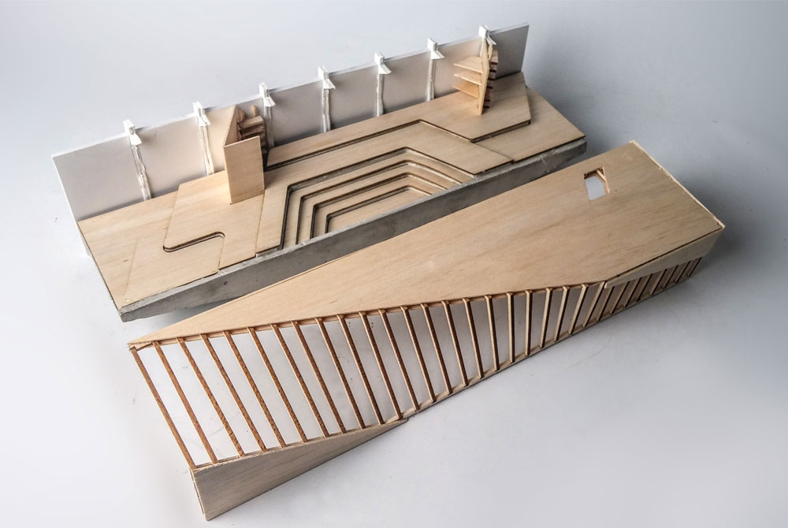
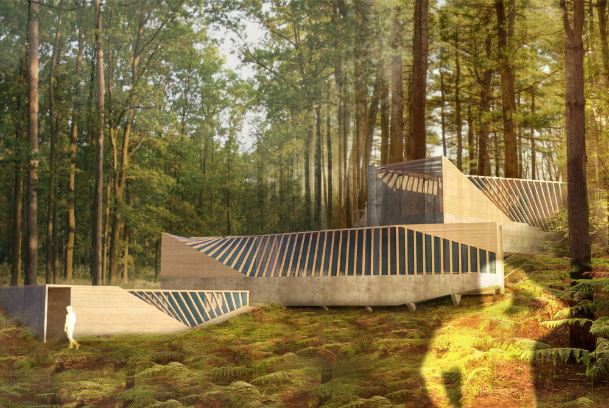
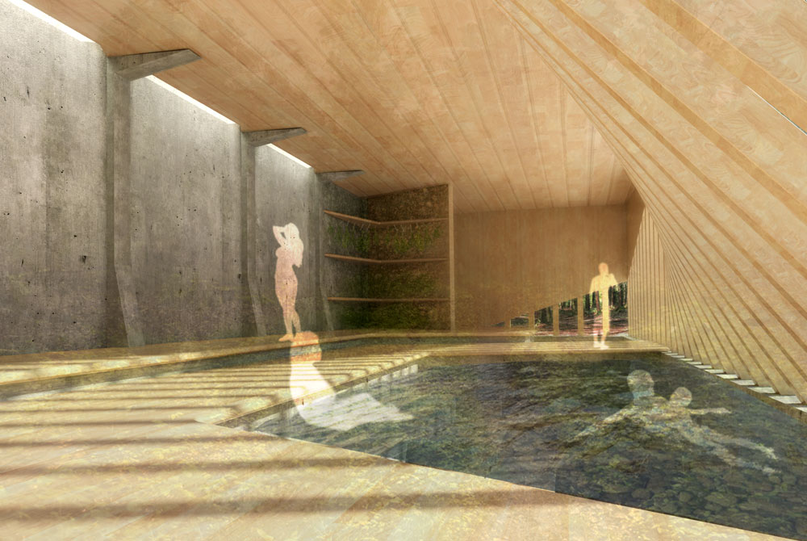
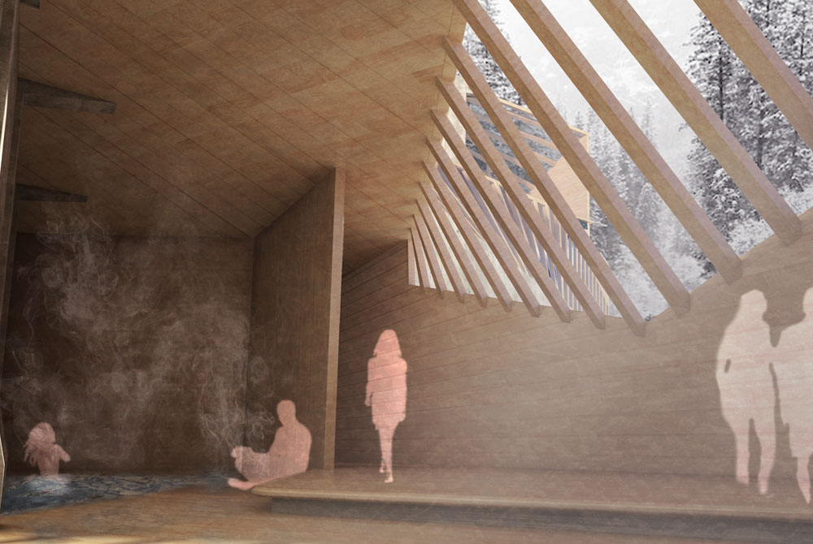
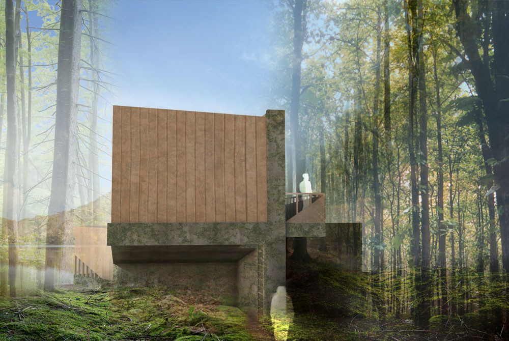
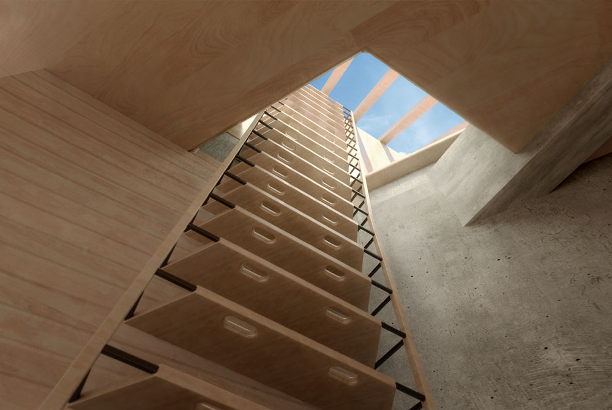
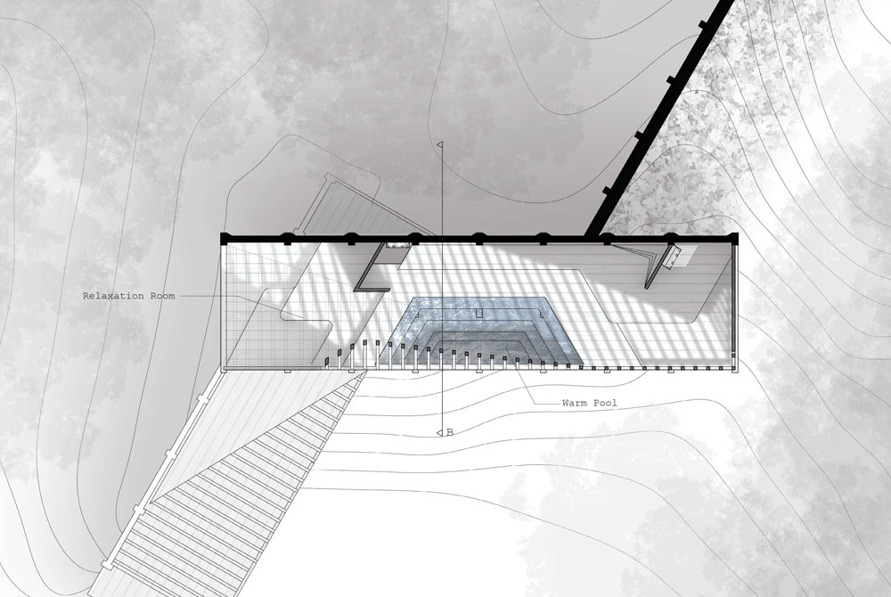
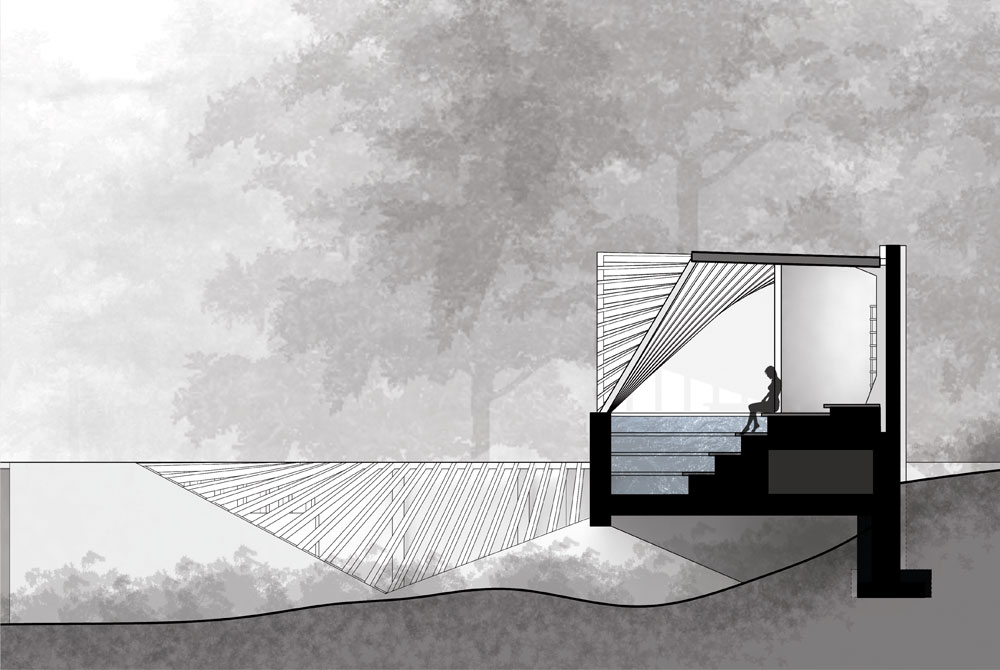
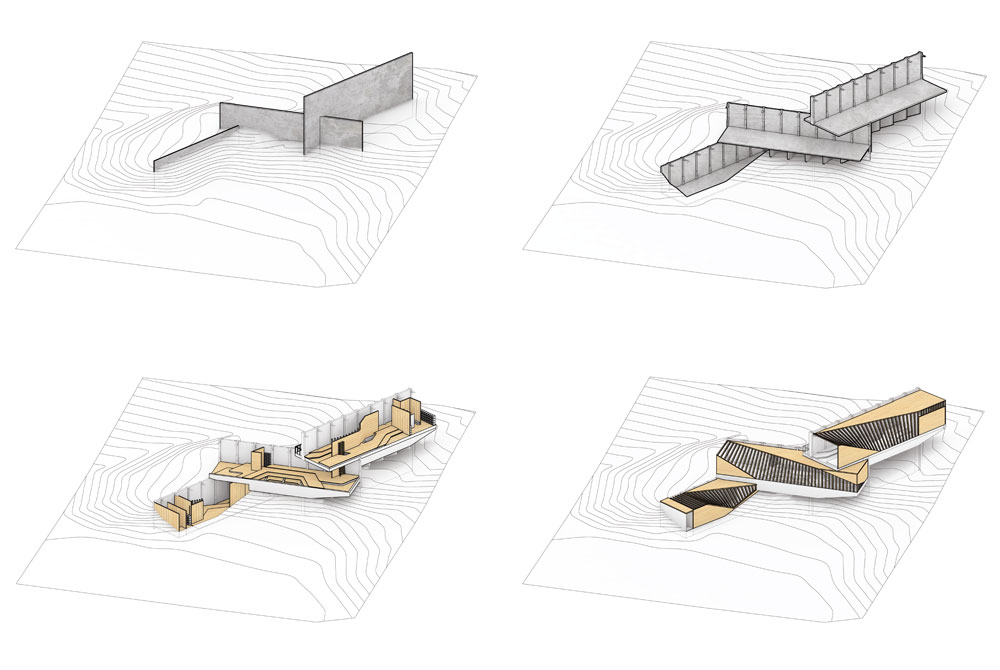
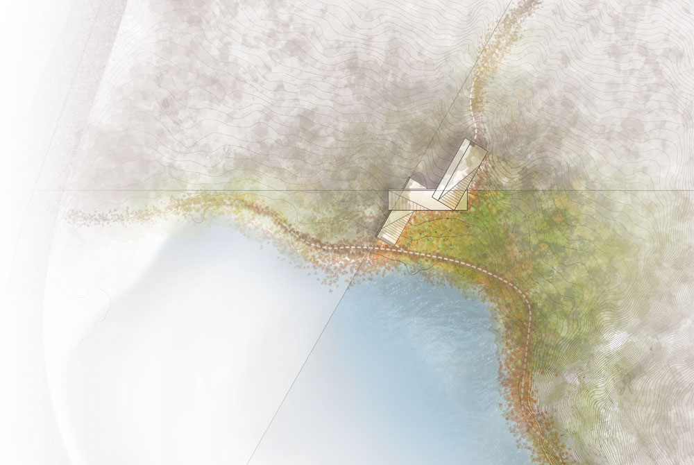

The Saco Lake Wellness Center was developed as a process-focused, eight-week studio project exploring material and atmosphere. Using a mix of wood and concrete, the design was explored primarily through creating and developing atmosphere through the dual lens of digital collage and physical model. The program hosts baths and saunas of varying temperature, and the design project focuses on material systems to translate atmospheric ambitions into realistic construction.
Saco Lake is nestled within Crawford Notch, in the White Mountains of northern New Hampshire. The overarching design strategy results from the hiking culture of the area's visitors - focusing on walling off the activity of nearby roads and hostels, and focusing on the interaction of lake and mountain, creating and framing views and interactions with the elements of the canopy, forest, and lake. The design is separated into three distinct modules, each of which share similar characteristics. Heavy concrete structure is used to create the initial barrier, and twisting wood is introduced to create a softer interior interaction, an experiential connection between interior and exterior, and a shifting effect of direct light throughout the day. Variation in the floor plate creates seating, pools, and circulation. Ladders are used to create compressed, transitory moments between modules. The project investigates the use of concrete and wood in an isolated, natural context with few pre-existing social conditions.
Independent. Spring 2017.
[-] Material Systems - Middle Level

[-] Exterior - Lakeside

[-] Interior - Warm Pool

[-] Interior - Hot Pool

[-] Exterior - Forestside

[-] Interior - Ladder System

[-] Middle Level - Plan

[-] Middle Level - Section

[-] Concept - Plane, Structure, Partition, Shell

[-] Site Plan

made with love and html. © Dan Cascaval 2017.